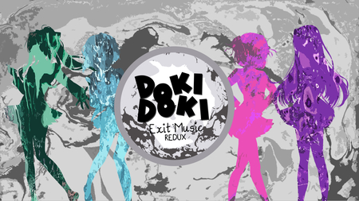

Exit Music Redux
Remake Do MOD Exit Music, praticamente feito do Zero, ainda é uma demo porem ja da pra sentir o gostinho do que sera o mod quando lançar sua versão completa. Primeira Tradução Oficial do MOD, com total Apoio da Equipe que desenvolveu o MOD, a Wretched Team. Agradeço do Fundo do Coração a oportunidade.
⬇ Download